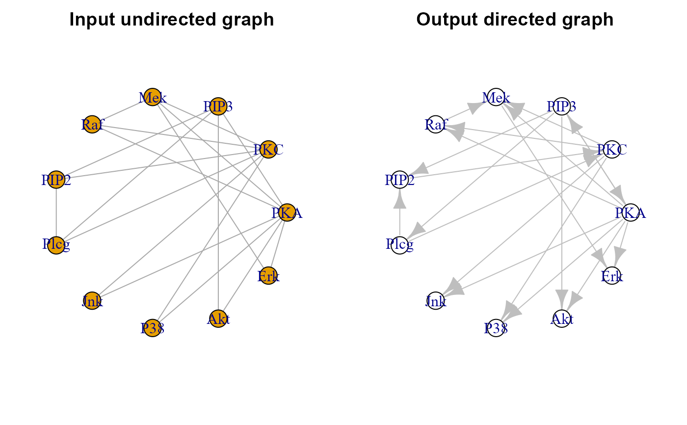

Assign edge orientation of an undirected graph through a given reference directed graph. The vertex (color) and edge (color, width and weight) attributes of the input undirected graph are preserved in the output directed graph.
Examples
# Graphs definition
G0 <- as_undirected(sachs$graph)
# Reference graph-based orientation
G1 <- orientEdges(ug = G0, dg = sachs$graph)
# Graphs plotting
old.par <- par(no.readonly = TRUE)
par(mfrow=c(1,2), mar=rep(2,4))
plot(G0, layout=layout.circle, main = "Input undirected graph")
plot(G1, layout=layout.circle, main = "Output directed graph")
#> Warning: vertex attribute color contains NAs. Replacing with default value 1

par(old.par)